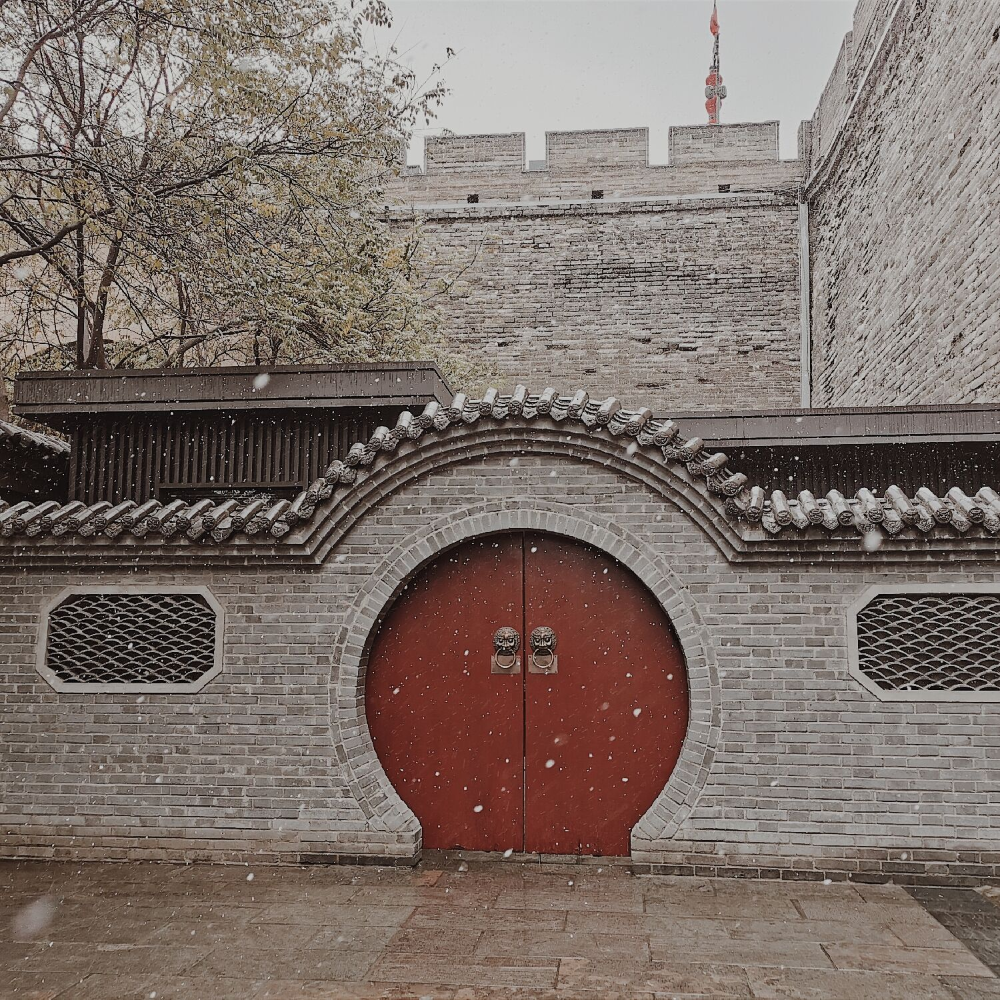

第四版
第四版

“西安的冬天有没有雪啊？”
“不知道，应该会有吧。……我还没见过雪。”
“······……”
这是一个南方室友和北方室友的对话。北方的你和南方的她，从千里之外邂逅秦岭，这个南北方的交界。你们都在尝试，陌生而崭新的大学生活。
她问你，窗台下的一堆铁块是装修忘记拿走的材料么，你哑然失笑，这是暖气啊，你还真不知道啊。那时还是30多度的西安，你很惊奇明明这么热，路人却没有撑伞遮阳的。那时你并不与她相熟，独自倔强地想融入这座城。
眼看着校园里的葱绿逐渐趋于金黄与沁红，又或是墨绿，你们也在两个月里走过了学校里的各个角落，她固执的说，既然竹园有竹子，那么丁香一定是有丁香的，海棠也有海棠，只是我们还没找到。好吧，你说的对。
你听说北方的家已经开始下雪了。你开始想念曾经堆过的雪人、打过的雪仗、雪地里摔过的跤。手机里的天气显示，15度。你长叹一口气。寒假快点来吧，你想回去邂逅北国的万里雪飘了。
在那个本平淡无奇的周末，你们如往日一样从图书馆出来去操场打卡。一滴，两滴，它确实算不上片片雪花，但总算是见到了雪。你和来自南方的她说，这我觉得，勉强算是雪了吧。你相信吗，在北方冬天有一种假期叫下雪假。雪太大，当你迈出脚，雪就能淹没你的脚踝，车辆很难通行的。她说，还有这等好事？白嫖的假期啊。
又是崭新的一周了。周一早上起床永远是极其艰难的事。当你回身拉开窗帘是，照耀你的不是清晨的阳光，而是，白茫茫的冰雪世界！这……真的不是幻觉？你看到了银装素裹的西电。你讶异，这一树梨花，可是西电送你的入冬礼？她凑了过来，哦，又下雪了啊。“不不不，昨天那才不能算是雪呢，要这样，树枝上挂的满满的，屋顶铺上厚厚的一层，最好是有树枝被积雪压断，哈哈哈……”你手舞足蹈地和她说着。“我个南方人都没这么兴奋，你怕不是个假北方人。”“说了你也不懂。”你知道看到这种雪，心里会是多么雀跃。也许，雪已经成为了刻在你骨子里的一种基因了吧。与昨日周末的“雪”相比，这才是你心中的初雪。
你在雪中小心翼翼地撑伞前行。其实，北方人下雪天哪里有打伞的啊。这是你融入这座城市的一种方式吧。然后，你便看到了操场上的雪人，一个一个，飞扬着青年人的意趣。你知道，在不经意间邂逅了你与西安城一夜两白头，邂逅了一群志趣相投的、五湖四海的西电人，你可能，不用在努力地融入西安城了。这座城，满足了你对于南方的幻想，满足了你对于北方的眷恋，满足了，你对于自己青春的各种想法。
你，和她，和他，和它。在这座城市的牵引之下，来到了西电。很难说你们究竟为何选择了这座城，但，在这一簇一簇雪花之间，你邂逅了那一片雪，邂逅了这样一群人。果然，每一片雪花都有自己的故事啊。